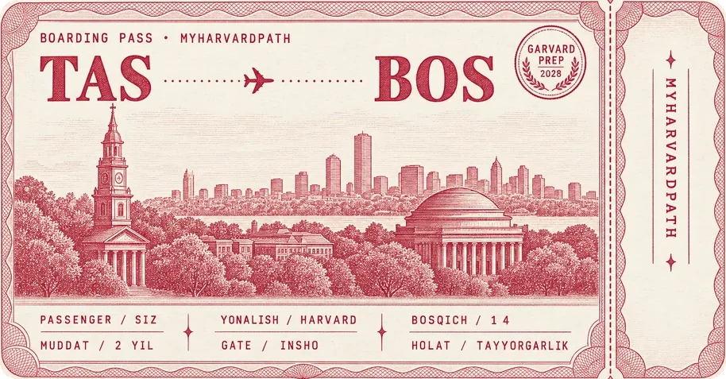

Garvardga yo'l bitta imtihondan iborat emas
FLEX dasturi, Harvardning to'liq qabul talablari, ingliz tili tayyorgarligi va intervyu bo'yicha amaliy maslahatlar — bitta joyda. O'zbekiston maktab o'quvchilari uchun, real tajriba asosida.

FLEX dasturi, Harvardning to'liq qabul talablari, ingliz tili tayyorgarligi va intervyu bo'yicha amaliy maslahatlar — bitta joyda. O'zbekiston maktab o'quvchilari uchun, real tajriba asosida.

MyHarvardPath — Harvardga kirish yo'lidagi har bir bosqich haqida amaliy ma'lumot beruvchi kanal va sayt.
Eslatma: Ilyos Harvardga hali qabul qilinmagan va u yerda o'qimaydi — u hozir ham maktab o'quvchisi va Harvardga kirish yo'lida tayyorgarlik ko'rmoqda. Sayt shu jarayonning kundaligi.
Buni Ilyos Ruzibekov yuritadi — maqsad oddiy: Harvardga (va shunga o'xshash universitetlarga) ariza topshirayotgan o'zbekistonlik o'quvchilarga FLEX dasturidan tortib insho, tavsiyanoma va intervyugacha bo'lgan har bir bosqichda aniq, tekshirilgan yo'l-yo'riq berish.
Kanal va muallif haqida ko'proq →
Telegram kanal @MyHarvardPath Skanerlang yoki bosing →Har bir sahifa alohida mavzuga bag'ishlangan — kerakli joyingizdan boshlang.
Testlar, akademik tayyorgarlik, insholar, tavsiyanomalar va moliyaviy yordam — to'liq qabul jarayoni bosqichma-bosqich.
O'qish →AQSh Davlat departamenti dasturi: ariza, essay, ingliz tili testi va intervyu bosqichlari haqida to'liq qo'llanma.
O'qish →Bepul ilovalar, podkastlar va saytlar orqali ingliz tilingizni mustaqil ravishda rivojlantirish yo'llari.
O'qish →Phrasal verbs, idiomalar, mavzuviy lug'at va IELTS uchun tayyor insho shabloni.
O'qish →Telegram kanalidagi maslahatlar, yangiliklar va shaxsiy tajriba yozuvlarining to'plami.
O'qish →Bu raqamlar qo'rqitish uchun emas — real reja tuzish uchun kerak.